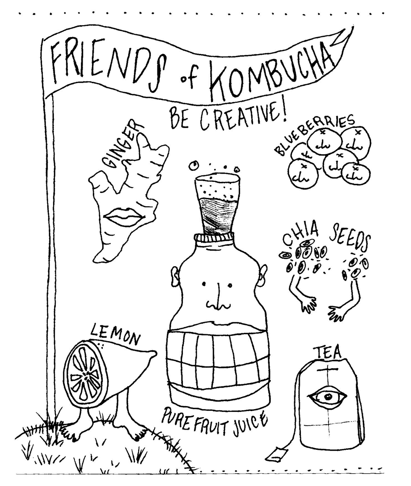

Alcuni tipi maggiori di tè sono:
nero
bianco
verde
puer
oolong
kombucha
chai
e tè alle perle (con latte)!
Inoltre, potresti aggiungere spezie
(come la cannella, lo zenzero, il cardamomo, il noce moscata,
il chiodo di garfano, il baccello di vaniglia, e l'anice stellato),
erbe (il timo, il finocchio, il basilico, la salvia, il rosmarino,
la menta, la camomilla, il gelsomino),

frutta o succo di frutta (il limone, l'arancia, il pompelmo, le bacche,),
o miele e sciroppo alla sua tazza di tè.